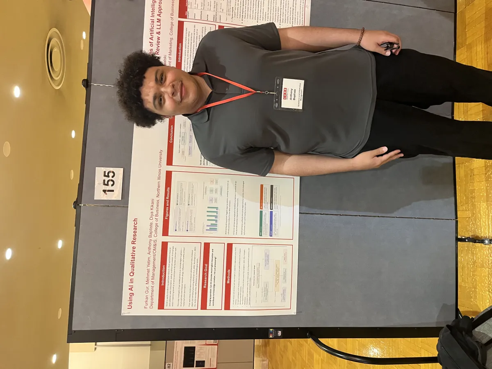

Researchers who need faster first-pass insight without losing rigor.
The workspace keeps studies, protocols, personas, guides, transcripts, simulations, and comparisons scoped together.
Applied AI Research
Research work focused on whether AI-generated personas and interview simulations can support qualitative research without losing methodological rigor.
The workflow combines custom GPT tools, a productized research workspace, transcript generation, comparison against human interview patterns, and Python NLP evaluation. The goal is not simply to generate synthetic text; it is to evaluate where LLM-assisted workflows are useful, where they distort evidence, and how researchers should interpret outputs responsibly.
Product case study
Problem: qualitative researchers can use AI to move faster, but prompt-only workflows make it hard to preserve study scope, protocol consistency, transcript grounding, and researcher control.
What I built: a FastAPI-backed, multi-page research platform for studies, protocols, personas, interview guides, transcripts, simulations, structured comparisons, Gioia-style analysis, exports, auth, storage, and support-ticket triage.
Product decision: the platform separates setup, generation, and evaluation so researchers can treat AI as a methodological augment rather than a replacement for human interpretation.
The workspace keeps studies, protocols, personas, guides, transcripts, simulations, and comparisons scoped together.
Researchers can define protocol guidance, run persona-conditioned AI interviews, and pressure-test outputs against real transcript evidence.
The research compared human and AI responses across tone, depth, conceptual accuracy, structure, emotional nuance, and context sensitivity.
The research found AI strong in structure and consistency, but weaker in emotion, nuance, and contextual grounding.
The app includes auth/session handling, local or Supabase storage, upload parsing, security headers, export workflows, and support-ticket triage logic.
Add stronger evidence citations, side-by-side human review scoring, bias flags, team workspaces, and exportable research briefs.
Research proof
Presentation deck covering GPT interview simulation, AI personas, transcript comparison, and responsible qualitative research workflows.
Open Deck
CURE presentation work connecting AI-generated interviews, human comparison, and qualitative interpretation discipline.
Open PosterResearch workflow product for study setup, persona-based interview simulation, transcript comparison, and guided qualitative interpretation.
Open App